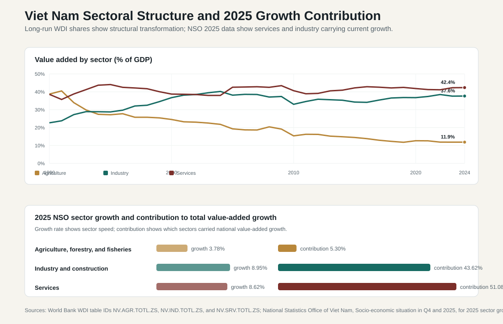
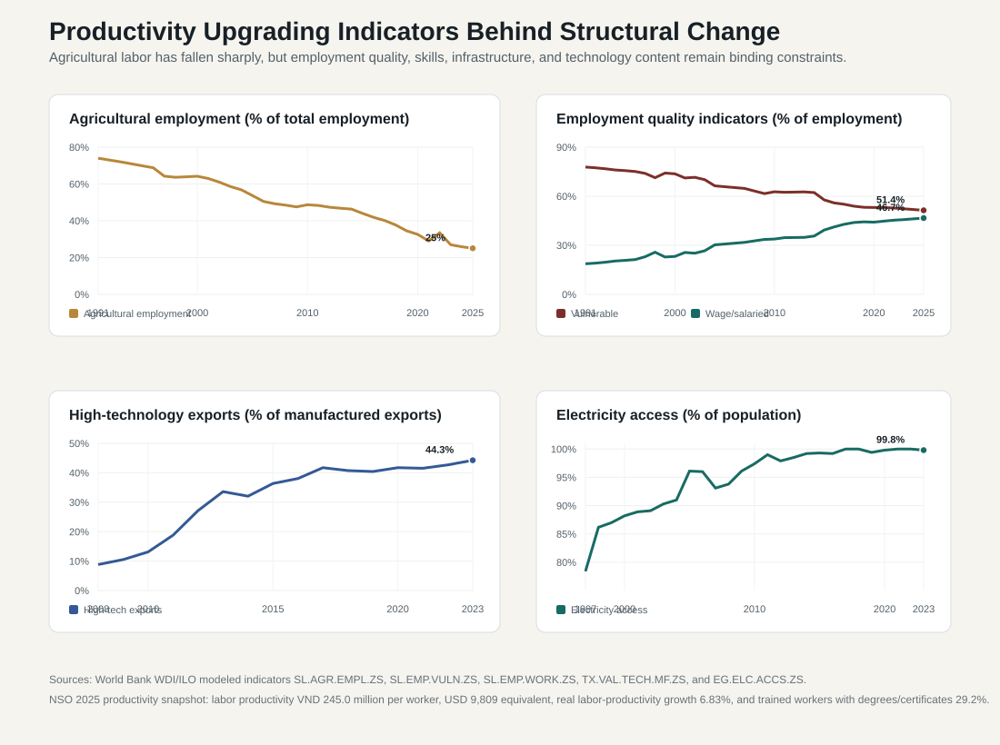

9.3 Industrial Structure, Sectoral Transformation, and Productivity
ASEAN comparative lens (2026). Vietnam should be read in ASEAN comparison as ASEAN's most prominent party-led, export-manufacturing upgrading case. Unlike the Philippines' service-remittance profile, Thailand's older industrial-tourism base, Malaysia's resource-industrial federal structure, or Indonesia's archipelagic domestic-market scale, Vietnam's comparative issue is how a socialist party-state manages very open global production networks. For this section, the regional comparison should compare growth, inflation, exchange-rate exposure, productivity, and sectoral structure with ASEAN's manufacturing, services, tourism, resource, and corridor-based models. Local comparable indicators show: population 100.99 million (2024), rank 3 among the nine ASEAN reports in this workspace; GDP US$476.39 billion (2024), rank 4 among the nine ASEAN reports in this workspace; GDP per capita US$4,717 (2024), rank 5 among the nine ASEAN reports in this workspace; real GDP growth 7.09% (2024), rank 1 among the nine ASEAN reports in this workspace; government effectiveness 0.09 (2023), rank 6 among the nine ASEAN reports in this workspace; internet use 84.15% (2024), rank 4 among the nine ASEAN reports in this workspace. Use `sources/documents/regional/asean_comparative_lens_2026.md` together with ASEANstats, ASEAN Secretariat materials, and the country processed-indicator files before making cross-ASEAN claims.
Vietnam's sectoral structure shows the core achievement of Doi Moi-era development: the economy moved away from agriculture-dominated production toward industry, construction, and services. But the same data also show the next constraint. Structural transformation is not complete simply because agriculture's GDP share has fallen. The key question is whether workers, firms, technology, logistics, skills, and public administration are moving into higher-productivity activities quickly enough.
This section uses three kinds of evidence. First, World Bank WDI indicators show long-run sector shares, agricultural employment, vulnerable employment, wage employment, high-technology export shares, and electricity access. Second, NSO Viet Nam's 2025 release shows which sectors carried the latest growth acceleration and how labor productivity changed. Third, international diagnostic indicators help interpret whether Vietnam's industrial structure is upgrading or only expanding in scale.

9.3.1 Sectoral Transformation: From Agriculture to Industry and Services
The long-run WDI series show a clear transformation. Agriculture, forestry, and fishing accounted for about 38.7 percent of GDP in 1990, 24.5 percent in 2000, 15.4 percent in 2010, and 11.9 percent in 2024. Industry's share rose from about 22.7 percent in 1990 to 36.7 percent in 2000 and 37.6 percent in 2024. Services remained the largest sector, moving from about 38.6 percent in 1990 to 42.4 percent in 2024.
This is more than a statistical shift. It represents the administrative conversion of a rural economy into an industrial and urban economy. Land conversion, industrial-zone licensing, export-processing rules, customs modernization, electricity supply, vocational training, environmental permitting, urban housing, and transport corridors all became core state functions. Vietnam's macroeconomic structure is therefore inseparable from public administration.
The transformation also shows why growth has been resilient. Agriculture is no longer the largest driver of GDP, but it still provides food security, rural employment, export commodities, and climate-sensitive livelihoods. Industry creates export capacity, jobs, FDI demand, energy demand, and provincial fiscal incentives. Services absorb urban labor, support logistics and finance, and increasingly determine productivity in trade, tourism, telecommunications, retail, professional services, education, and health.
9.3.2 What the 2025 Government Statistics Show
NSO's 2025 figures show that the latest growth acceleration was broad-based but not evenly distributed. Agriculture, forestry, and fisheries grew by 3.78 percent and contributed 5.30 percent to total value-added growth. Industry and construction grew by 8.95 percent and contributed 43.62 percent. Services grew by 8.62 percent and contributed 51.08 percent.
The interpretation is important. Services contributed more than half of value-added growth, so Vietnam is no longer only a manufacturing story. Industry and construction still carried a very large share of the increase, especially through manufacturing, infrastructure, construction, energy, and export production. Agriculture remained positive despite natural disasters and disease risks, but its growth contribution was much smaller because the sector's GDP weight has fallen.
This sector pattern should guide policy priorities. If services are the largest contributor to growth, Vietnam needs better regulation of finance, logistics, digital platforms, retail, tourism, health, education, and professional services. If industry remains the most visible export engine, Vietnam needs reliable power, faster infrastructure delivery, cleaner industrial zones, supplier upgrading, and stronger technology absorption. If agriculture's share is lower but its social role remains high, rural development and climate adaptation remain central.
9.3.3 Agriculture: Lower GDP Share, Persistent Governance Importance
Agriculture's GDP share has fallen sharply, but agriculture remains politically and administratively important. The NSO 2025 release notes that agricultural, forestry, and fishing production was affected by storms, floods, and animal disease, yet still produced positive growth. Rice production reached 43.54 million tons, the highest in the previous four years, while aquaculture increased by 5.1 percent. These details matter because agriculture is more than a declining sector. It is a food-security system, export base, land-use system, climate-risk zone, and rural welfare system.
The policy challenge is that agricultural productivity must rise while rural households become less dependent on low-productivity farming. This requires irrigation, seed quality, mechanization, cold chains, food safety, cooperative upgrading, digital extension services, land-market clarity, and climate adaptation. In the Mekong Delta, salinity intrusion, subsidence, water stress, and export-crop exposure make the agricultural question also an environmental and state-capacity concern.
The decline in agriculture's GDP share therefore has two meanings. It is a sign of successful structural transformation, but it also means the rural state must become more sophisticated. Vietnam cannot move people out of agriculture and then ignore rural resilience. It must raise rural productivity, reduce climate exposure, and provide realistic pathways into nonfarm work.
9.3.4 Industry and Construction: Manufacturing Power with Upgrading Pressure
Industry and construction are the visible symbols of Vietnam's catch-up growth. Electronics, garments, footwear, furniture, machinery, food processing, construction materials, and assembly industries have turned Vietnam into a major production platform. WDI data show industry at roughly 37.6 percent of GDP in 2024, far above the early reform-period level. NSO data show industry and construction contributing 43.62 percent of value-added growth in 2025.
The industrial model has several strengths. It uses Vietnam's location near China and ASEAN supply chains, strong trade-agreement network, competitive labor costs, FDI inflows, improving infrastructure, and political stability. It also gives provincial governments a clear development instrument: industrial zones, land allocation, worker housing, logistics, and investment promotion.
The weakness is value capture. Manufacturing expansion can raise exports without producing equivalent domestic technological capability if Vietnamese firms remain weak suppliers. Imported components, foreign management systems, and multinational buyer networks can dominate higher-value stages. The policy problem is therefore not measured by how much manufacturing Vietnam has, but where Vietnamese firms and workers sit inside value chains.
9.3.5 Services: The Largest Growth Contributor and the Next Productivity Frontier
Services are often treated as a residual category, but in Vietnam they are now a central development sector. Services accounted for about 42.4 percent of GDP in 2024 and contributed 51.08 percent of value-added growth in 2025. This includes retail, logistics, transport, finance, tourism, telecommunications, professional services, public services, education, health, real estate, and digital platforms.
The service sector's productivity matters because middle-income upgrading depends increasingly on service quality. A factory cannot export efficiently without customs brokerage, ports, shipping, insurance, finance, warehousing, digital systems, standards certification, and legal services. Urban households cannot enjoy higher living standards without better transport, health care, schools, housing services, sanitation, telecommunications, and consumer protection.
The administrative implication is that Vietnam's next growth stage requires better service regulation. The state must improve competition, licensing, data systems, quality standards, consumer protection, professional certification, digital payment regulation, tourism management, and urban service delivery. Services are not outside the development state; they are the infrastructure of a higher-productivity economy.

9.3.6 Labor Reallocation: The Main Productivity Engine So Far
Labor reallocation has been one of Vietnam's most important productivity mechanisms. WDI/ILO modeled data show agricultural employment falling from about 74.0 percent of total employment in 1991 to 64.2 percent in 2000, 48.7 percent in 2010, 25.9 percent in 2024, and 25.0 percent in 2025. This is a very large movement of labor out of low-productivity agriculture into industry, construction, and services.
This shift raises average productivity because workers move from subsistence or smallholder activities into wage work, factories, logistics, construction, retail, and services. But this mechanism has a natural limit. Once agricultural employment has already fallen to around one quarter of employment, Vietnam cannot rely indefinitely on the same easy gains from labor movement. The next gains must come from productivity within sectors.
That means better factories rather than factory counts alone; higher-value services rather than service employment alone; mechanized and climate-resilient agriculture rather than fewer farmers alone; and stronger vocational and tertiary skills rather than longer schooling alone. The policy focus has to shift from absorbing labor to upgrading labor.
9.3.7 Employment Quality: Vulnerable Work Remains High
Employment quality indicators show why structural change is not complete. WDI/ILO data show vulnerable employment falling from about 77.8 percent of employment in 1991 to 73.7 percent in 2000, 62.7 percent in 2010, 51.9 percent in 2024, and 51.4 percent in 2025. Over the same period, wage and salaried workers rose from about 18.7 percent in 1991 to 23.2 percent in 2000, 33.8 percent in 2010, 46.2 percent in 2024, and 46.7 percent in 2025.
The direction is positive, but the level is still demanding. More than half of employment remains classified as vulnerable in 2025. This suggests that many workers are still in own-account work or contributing family work rather than stable wage employment with clearer social insurance, labor protection, training pathways, and predictable income.
This is a central inclusion problem. Vietnam can grow rapidly while many workers remain outside secure employment relationships. Policy must therefore connect industrial strategy to labor inspection, social insurance portability, skills recognition, occupational safety, migrant housing, and worker representation through official channels. Productivity upgrading will be weaker if workers remain informal, underprotected, and hard to train.
9.3.8 High-Technology Exports: Upgrading Signal with Interpretation Limits
High-technology exports as a share of manufactured exports are a useful but tricky indicator. WDI data show Vietnam's high-technology export share rising from about 8.8 percent in 2008 to 13.1 percent in 2010, 36.4 percent in 2015, 40.4 percent in 2019, 42.7 percent in 2022, and 44.3 percent in 2023. This is a remarkable increase and reflects the rise of electronics, phones, computers, components, and related manufacturing.
However, the indicator should not be read as proof that Vietnam controls high technology domestically. A high high-tech export share can result from foreign-invested firms assembling sophisticated products with imported components and foreign-owned technology. The export product may be high-tech even if the local value added, research and development, supplier base, and domestic intellectual property remain limited.
The correct interpretation is therefore balanced. The high-tech export trend shows that Vietnam has successfully inserted itself into high-technology production networks. But upgrading requires more than export classification. It requires domestic suppliers, engineers, testing labs, standards institutions, design capacity, management upgrading, research links, and stronger Vietnamese firms.
9.3.9 Infrastructure and Logistics as Productivity Conditions
Infrastructure is a productivity variable. Near-universal electricity access is one of Vietnam's achievements: WDI data show access rising from 88.2 percent of the population in 2000 to 97.4 percent in 2010 and 99.8 percent in 2023. The policy frontier has therefore moved from connection to reliability, generation mix, grid capacity, power-market reform, and industrial power security.
Logistics performance is also central. The World Bank Logistics Performance Index for Vietnam improved from 2.89 in 2007 to 3.30 in 2022 in the project data. This matters because Vietnam's export model depends on ports, roads, customs, industrial zones, warehousing, border procedures, and multimodal corridors. A small improvement in logistics can raise competitiveness across many sectors at once.
The infrastructure issue is also administrative. Power plants, transmission lines, expressways, ports, land clearance, environmental approvals, provincial coordination, procurement, and public-private partnerships all require capable public institutions. If administrative procedures delay infrastructure, the productivity cost appears later as congestion, power shortages, higher logistics costs, and lower investor confidence.
9.3.10 Productivity: The Central Constraint of the Next Stage
NSO estimated economy-wide labor productivity in 2025 at VND 245.0 million per worker, equivalent to USD 9,809, with real labor-productivity growth of 6.83 percent. It also reported that trained workers with degrees or certificates reached 29.2 percent of workers, 0.8 percentage points higher than in 2024. These figures show progress, but also the constraint: most workers still do not hold formal degrees or certificates.
Productivity is where sectoral structure, human capital, firm capability, and administrative quality meet. If workers move from agriculture to factories but remain in low-skill assembly, productivity gains slow. If FDI firms export high-tech goods but domestic suppliers remain shallow, value capture stays limited. If services expand but remain low-productivity retail and informal work, services may absorb labor without lifting income enough. If public investment is delayed or poorly selected, infrastructure does not raise potential growth.
Vietnam's policy problem is therefore not a matter of whether agriculture, industry, or services should be larger. It is whether each sector becomes more productive. Agriculture needs climate-resilient and higher-value production. Industry needs domestic supplier upgrading and technology absorption. Services need regulation, professionalization, digitalization, and competition. The state must coordinate these transitions without freezing private initiative.
9.3.11 Indicator-by-Indicator Interpretation
| Indicator | Main trend | Interpretation | Policy warning |
|---|---|---|---|
| Agriculture value added | 38.7% of GDP in 1990; 11.9% in 2024 | Classic structural transformation away from agriculture. | Rural livelihoods, land, water, and climate risk remain major governance issues. |
| Industry value added | 22.7% of GDP in 1990; 37.6% in 2024 | Manufacturing and construction are core growth sectors. | Domestic value added and technology transfer are not automatic. |
| Services value added | 42.4% of GDP in 2024; 51.08% of 2025 value-added growth contribution | Services are now central to growth and productivity. | Service regulation, competition, urban governance, and digital systems must improve. |
| Agricultural employment | 74.0% in 1991; 25.0% in 2025 | Labor reallocation has been a major productivity source. | Future gains must come from within-sector productivity, not only movement out of farming. |
| Vulnerable employment | 77.8% in 1991; 51.4% in 2025 | Employment quality has improved but remains fragile. | Informality, social insurance gaps, and weak worker protection can constrain upgrading. |
| Wage and salaried employment | 18.7% in 1991; 46.7% in 2025 | Formal employment relationships have expanded. | Stable wage work still does not cover the whole workforce. |
| High-tech exports | 8.8% of manufactured exports in 2008; 44.3% in 2023 | Vietnam is deeply integrated into high-tech production networks. | Export sophistication can overstate domestic technological capability. |
| Electricity access | 88.2% in 2000; 99.8% in 2023 | Basic energy access is largely solved. | Reliability, grid investment, generation mix, and industrial power security are now the binding constraints. |
| Labor productivity | USD 9,809 per worker in 2025; real growth 6.83% | Productivity is improving and must become the main growth driver. | Skills, firm capability, public investment quality, and administrative predictability decide the next stage. |
9.3.12 Policy Implications
Vietnam's sectoral transformation is real, but the next stage is more difficult. The country has moved labor and output away from agriculture, built a large industrial base, and expanded services. It has also entered high-tech export networks and achieved near-universal electricity access. These are major accomplishments.
The unresolved issue is upgrading. Vietnam must convert sectoral change into productivity growth. That requires stronger domestic firms, deeper supplier networks, higher-quality skills, reliable power, better logistics, more predictable regulation, and stronger service-sector institutions. It also requires social inclusion: workers must be able to move into higher-productivity jobs with training, social insurance, occupational safety, and affordable urban services.
The most important policy conclusion is that industrial policy and public administration are inseparable. Industrial upgrading depends on customs, land, infrastructure, skills, standards, finance, digital systems, environmental regulation, and local implementation. Vietnam's next productivity gains will come not only from market expansion, but from whether the state can make the whole production system work better.